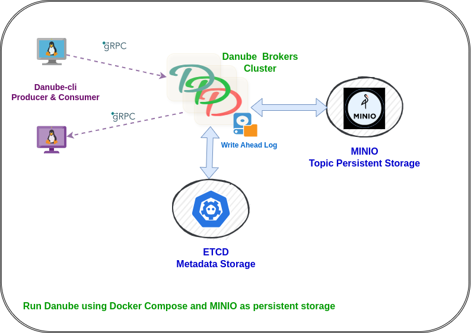

Run Danube with Docker Compose
This guide provides instructions on how to run Danube Messaging using Docker and Docker Compose. It sets up ETCD for metadata storage and MinIO for topic persistence storage.
Architecture Overview
The setup includes:
- 2 Danube Brokers: High-availability message brokers with load balancing
- ETCD: Distributed metadata store for cluster coordination
- MinIO: S3-compatible object storage for persistent message storage
- MinIO Client (MC): Automatic bucket creation and configuration

Prerequisites
- Docker Engine 20.10+
- Docker Compose 2.0+
- At least 4GB RAM available for containers
- Ports 2379, 2380, 6650-6651, 9000-9001, 9040-9041, 50051-50052 available
Quick Start
Step 1: Setup (Choose One Option)
Option 1: Download Docker Compose Files (Recommended for running the broker)
Create a directory and download the required files:
Download the docker-compose file:
Download the broker configuration file:
Option 2: Clone Repository (Recommended for development and building from source)
Step 2: Start the Cluster
Start the entire cluster:
Step 3: Verify all services are healthy
Verify all services are running:
Expected output:
✗ docker-compose ps
NAME IMAGE COMMAND SERVICE CREATED STATUS PORTS
danube-broker1 docker-broker1 "/usr/local/bin/danu…" broker1 About a minute ago Up 6 seconds (health: starting) 0.0.0.0:6650->6650/tcp, [::]:6650->6650/tcp, 0.0.0.0:9040->9040/tcp, [::]:9040->9040/tcp, 0.0.0.0:50051->50051/tcp, [::]:50051->50051/tcp
danube-broker2 docker-broker2 "/usr/local/bin/danu…" broker2 About a minute ago Up 6 seconds (health: starting) 0.0.0.0:6651->6650/tcp, [::]:6651->6650/tcp, 0.0.0.0:9041->9040/tcp, [::]:9041->9040/tcp, 0.0.0.0:50052->50051/tcp, [::]:50052->50051/tcp
danube-cli docker-danube-cli "sleep infinity" danube-cli About a minute ago Up 6 seconds
danube-etcd quay.io/coreos/etcd:v3.5.9 "/usr/local/bin/etcd" etcd About a minute ago Up 12 seconds (healthy) 0.0.0.0:2379-2380->2379-2380/tcp, [::]:2379-2380->2379-2380/tcp
danube-mc minio/mc:RELEASE.2024-09-16T17-43-14Z "/bin/sh -c ' echo '…" mc About a minute ago Up About a minute
danube-minio minio/minio:RELEASE.2025-07-23T15-54-02Z "/usr/bin/docker-ent…" minio About a minute ago Up About a minute (healthy) 0.0.0.0:9000-9001->9000-9001/tcp, [::]:9000-9001->9000-9001/tcp
Check logs (optional):
# View all logs
docker-compose logs -f
# View specific service logs
docker-compose logs -f broker1
docker-compose logs -f broker2
Service Endpoints
| Service | Endpoint | Purpose |
|---|---|---|
| Danube Broker 1 | localhost:6650 |
gRPC messaging |
| Danube Broker 2 | localhost:6651 |
gRPC messaging |
| Admin API 1 | localhost:50051 |
Broker administration |
| Admin API 2 | localhost:50052 |
Broker administration |
| Prometheus 1 | localhost:9040 |
Metrics and monitoring |
| Prometheus 2 | localhost:9041 |
Metrics and monitoring |
| MinIO API | localhost:9000 |
S3-compatible storage |
| MinIO Console | localhost:9001 |
Web UI (minioadmin/minioadmin123) |
| ETCD | localhost:2379 |
Metadata store |
Testing with Danube CLI
Using the CLI Container
The Docker Compose setup includes a danube-cli container with both danube-cli and danube-admin-cli tools pre-installed. This eliminates the need to build or install Rust locally.
No local installation required - use the containerized CLI tools directly.
Reliable Messaging with S3 Storage
Test the cloud-ready persistent storage capabilities:
Produce with reliable delivery and S3 persistence:
docker exec -it danube-cli danube-cli produce \
--service-addr http://broker1:6650 \
--topic "/default/persistent-topic" \
--count 1000 \
--message "Persistent message" \
--reliable
Consume persistent messages:
docker exec -it danube-cli danube-cli consume \
--service-addr http://broker1:6650 \
--topic "/default/persistent-topic" \
--subscription "persistent-sub" \
--sub-type exclusive
Non-Reliable Message Flow Testing
Basic string messages
Produce basic string messages:
docker exec -it danube-cli danube-cli produce \
--service-addr http://broker1:6650 \
--topic "/default/test-topic" \
--count 100 \
--message "Hello from Danube Docker!"
Consume from shared subscription:
docker exec -it danube-cli danube-cli consume \
--service-addr http://broker1:6650 \
--topic "/default/test-topic" \
--subscription "shared-sub" \
--consumer "docker-consumer"
JSON schema messages
Produce JSON messages with schema:
docker exec -it danube-cli danube-cli produce \
--service-addr http://broker1:6650 \
--topic "/default/json-topic" \
--count 100 \
--schema json \
--json-schema '{"type":"object","properties":{"message":{"type":"string"},"timestamp":{"type":"number"}}}' \
--message '{"message":"Hello JSON","timestamp":1640995200}'
Consume JSON messages:
docker exec -it danube-cli danube-cli consume \
--service-addr http://broker2:6650 \
--topic "/default/json-topic" \
--subscription "json-sub" \
--consumer "json-consumer"
Admin CLI Operations
Use danube-admin-cli for cluster management:
# List active brokers
docker exec -it danube-cli danube-admin-cli brokers list
# List namespaces in cluster
docker exec -it danube-cli danube-admin-cli brokers namespaces
# List topics in a namespace
docker exec -it danube-cli danube-admin-cli topics list default
# List subscriptions on a topic
docker exec -it danube-cli danube-admin-cli topics subscriptions /default/test-topic
Monitoring and Observability
Prometheus Metrics
Access broker metrics for monitoring:
# Broker 1 metrics
curl http://localhost:9040/metrics
# Broker 2 metrics
curl http://localhost:9041/metrics
MinIO Console
- Open http://localhost:9001 in your browser
- Login with credentials:
minioadmin/minioadmin123 - Navigate to "Buckets" to see:
danube-messages: Persistent message storagedanube-wal: Write-ahead log storage
ETCD Inspection
# List all keys in ETCD
docker exec danube-etcd etcdctl --endpoints=http://127.0.0.1:2379 get --prefix ""
# Watch for changes
docker exec danube-etcd etcdctl --endpoints=http://127.0.0.1:2379 watch --prefix ""
# Check broker registrations
docker exec danube-etcd etcdctl --endpoints=http://127.0.0.1:2379 get --prefix "/cluster/register"
Configuration
Broker Configuration
The danube_broker.yml file is optimized for:
- S3 Storage: MinIO integration with automatic credential management
- High Performance: Optimized WAL rotation and batch sizes
- Development: Relaxed security and unlimited resource policies
- Monitoring: Prometheus metrics enabled on all brokers
Environment Variables
Key environment variables used:
AWS_ACCESS_KEY_ID=minioadminAWS_SECRET_ACCESS_KEY=minioadmin123AWS_REGION=us-east-1RUST_LOG=danube_broker=info,danube_core=info
Troubleshooting
Common Issues
- Port conflicts: Ensure all required ports are available
- Memory issues: Increase Docker memory allocation if containers fail to start
- Storage issues: Check MinIO bucket creation in logs:
docker-compose logs mc
Reset Environment
# Stop and remove all containers, networks, and volumes
docker-compose down -v
# Remove all Danube-related Docker resources
docker volume prune -f
docker network prune -f
# Restart fresh
docker-compose up -d
Production Considerations
This setup demonstrates Danube's cloud-ready capabilities. For production deployment:
- Replace MinIO with AWS S3, Google Cloud Storage, or Azure Blob Storage
- Enable TLS/SSL authentication in broker configuration
- Configure resource limits and health checks appropriately
- Set up monitoring with Prometheus and Grafana
- Implement backup strategies for ETCD and persistent storage
- Use container orchestration like Kubernetes for scaling
AWS S3 Migration
To migrate from MinIO to AWS S3, update danube_broker.yml:
wal_cloud:
cloud:
backend: "s3"
root: "s3://your-production-bucket/danube-cluster"
region: "us-west-2"
# Remove endpoint for AWS S3
# endpoint: "http://minio:9000"
# Use IAM roles or environment variables for credentials
This Docker Compose setup showcases Danube's architecture with cloud-native storage.